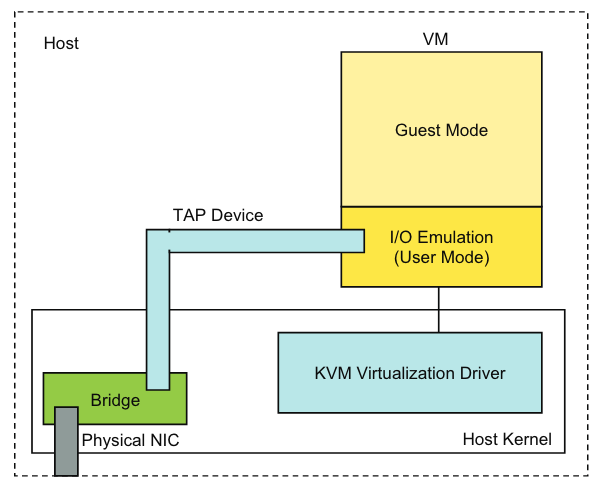

Evaluating Standard-Based Self-Virtualizing Devices: A Performance Study of 10GbE NICs with SR-IOV Support
Summary
The hardware-based SR-IOV approach provides superior performance to the software-based approach in KVM.
SR-IOV approach has great potential to achieve high performance I/O in a virtualized environment.
Outline
Introduction
We can divide the current I/O virtualization models into two categories:
- Software-based
- Several software components (e.g., hypervisor, guest VMs...) work together to provide access points to VMs without special hardware support.
- Major concern: may suffer significant performance degradation - overheads such as context/control switches and memory copies.
- Hardware-based
- Potentially achieve higher performance by allowing direct hardware access from within a guest VM.
Background
SR-IOV
I/O Virtualization in KVM
Network Virtualization in KVM:

When code within a virtual machine attempts to send network packets through a virtual network interface card, the virtual machine needs to perform a VM exit. This transfers control to the I/O emulation code in the user space of the host machine to handle these packets. The process includes:
- The program within the virtual machine tries to perform a network operation, such as sending a packet.
- As the virtual machine cannot directly communicate with physical hardware, this operation triggers a VM exit, causing the execution of the virtual machine to be suspended.
- Control is passed to the host's KVM module, which identifies the operation as a network action.
- KVM transfers control to the I/O emulation code running in user mode.
- The I/O emulation code sends or receives network packets through the user space TAP device.
- Once the network I/O operation is complete, control is returned to the virtual machine, which then continues to execute the remaining instructions.
Evaluation Methodology
Experimental Testbed
- Two servers with a back-to-back 10 GbE connection.
- Primary server
- Secondary server
- NIC with support for SR-IOV
Test Cases, Benchmarks and Data Collection
- SR-IOV: This is the case where PCI passthrough is used to dedicated a virtual function of the X3100 10 GbE NIC to each VM.
- VIRTIO: The software approach is used in this case where a TAP interface is used to emulate a NIC in each VM and bridged to the X3100 NIC in the host. The emulated NICs in the guest VMs are based on virtio.
- Native: The tests are done in native Linux without using any VMs.
Evaluation
Latency, Bandwidth, Inter-VM Communication etc.